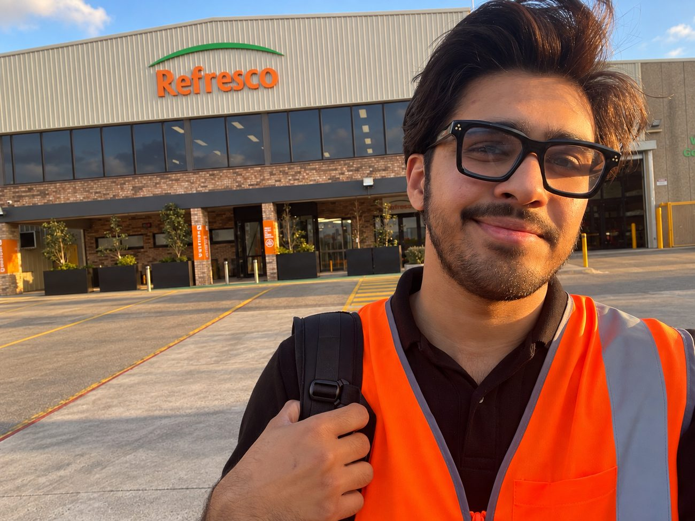

About Muhammad Ahmad Naeem
I am a production and manufacturing engineer based in Sydney. I work on beverage and food plants, on the floor, with the people who run the lines.
I studied mechanical engineering at GIK Institute in Pakistan from 2019 to 2024. I was President of the ASHRAE student chapter and Tech Head of Team Urban, which builds vehicles for Shell Eco-marathon. I also built things of my own, including an electric bike, a wire bending machine and a braiding machine.
My interest in factories started at Unilever in Lahore in 2022, where I was a maintenance intern on a 13 line noodle plant. Automatic lubrication I introduced there cut equipment failures by 40 percent.
After graduating I joined PepsiCo in Faisalabad as a production intern and became a Production Engineer. I was responsible for production, operations and maintenance on two PET bottling lines and a Tetra Pak juice line, with a production team of 80. I delivered eleven water conservation projects that save 306,000 cubic metres a year, commissioned a new SIDEL blow moulder and a reverse osmosis plant, and rebuilt a nitrogen dosing system.
In February 2026 I moved to Sydney to study the Master of Professional Engineering (Mechanical) at the University of Technology Sydney. My first project here was with Elgas, designing automation for LPG cylinder cage handling.
Since August 2026 I have been at Refresco Australia in Sydney as a Manufacturing Engineering Intern, working across PET and can lines on maintenance, reliability and plant data.
How I work
Understand the machine. Improve the process. Learn from the people who run it. And always ask why one more time.
Short bio
For event organisers, editors and anyone who needs a paragraph about me:
Muhammad Ahmad Naeem is a production and manufacturing engineer based in Sydney, Australia. He works on beverage and food plants across PET bottle, carton and can lines. At PepsiCo he was responsible for production, operations and maintenance on three lines with a production team of 80, and delivered eleven water conservation projects that save 306,000 cubic metres of water a year. In Sydney he has designed LPG cylinder handling automation in an industry project with Elgas and now works at Refresco Australia. He holds a BSc in Mechanical Engineering from GIK Institute and is completing a Master of Professional Engineering at the University of Technology Sydney.
